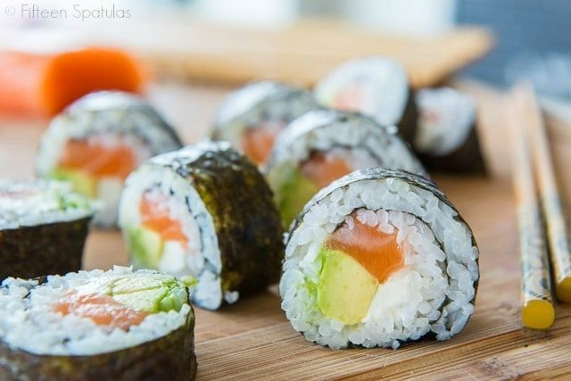

Homemade Sushi

Homemade Sushi
Homemade Sushi is healthy and affordable.
Ingredients
- 6 sheets sushi seaweed aka nori
- 1 batch prepared sushi rice
- 1/2 lb sashimi-grade raw salmon or desired raw fish of choice
- 4 oz cream cheese sliced into strips
- 1 avocado sliced
- soy sauce for serving
Instructions
-
Place the seaweed on a bamboo mat, then cover the sheet of seaweed with an even layer of prepared sushi rice. Smooth gently with a rice paddle.
-
Layer salmon, cream cheese, and avocado on the rice, and roll it up tightly. Slice with a sharp knife, and enjoy right away with soy sauce.
Nutrition
calories: 190kcal, carbohydrates: 11g, protein: 10g, fat: 12g, saturated fat: 5g, cholesterol: 40mg, sodium: 92mg, fiber: 2g, sugar: 1g